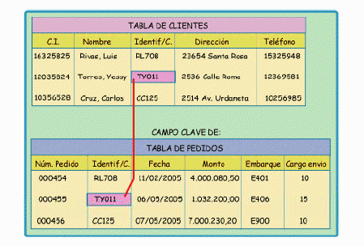

¿Qué son las bases de datos relacionales?
Una base de datos relacional es un sistema de almacenamiento de datos que organiza la información en tablas interconectadas. Cada tabla representa una entidad, y las relaciones entre ellas se establecen a través de claves primarias y claves foráneas.
Este modelo permite manejar grandes cantidades de información de forma estructurada, optimizando la integridad y eficiencia en la gestión de datos.
Características principales
- Estructura tabular: Los datos se almacenan en filas y columnas.
- Relaciones: Las tablas pueden relacionarse entre sí a través de claves.
- Integridad de datos: Garantiza la precisión y coherencia de la información.
- Lenguaje SQL: Utiliza el lenguaje estándar SQL para manipular y consultar datos.
Ventajas de las bases de datos relacionales
Facilidad de uso: Gracias a la estructura organizada en tablas, es fácil de comprender.
Flexibilidad: Permiten añadir o modificar datos sin afectar la estructura general del sistema.
Acceso eficiente: A través de consultas SQL, se pueden recuperar grandes volúmenes de información rápidamente.
Ejemplo práctico
Considera una base de datos para una tienda en línea con las siguientes tablas:
- Clientes: Almacena la información de los clientes.
- Productos: Lista de productos disponibles.
- Pedidos: Detalles de cada transacción.
Relaciones entre las tablas:
Espacio para video
Aquí puedes incluir un video tutorial sobre cómo crear una base de datos relacional: